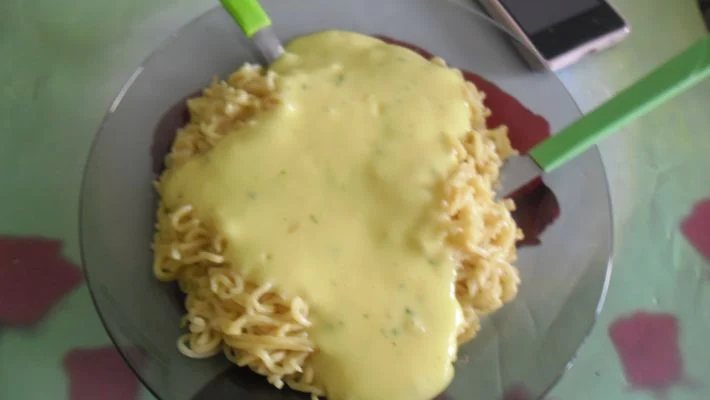

Miojo Fácil
A
incrível história do miojo
Com a olimpíada o Japão vai entrar nas nossas casas. Não que ele já não
esteja.
Um dos produtos mais consumidos no mundo é o miojo, e eu posso apostar
que em algum momento da sua vida essa mistura de macarrão, gordura
vegetal, água quente e um tempero que ninguém sabe direito do que é
feito, já foi sua refeição.
Já aconteceu comigo. E embora eu não tenha muita saudade da época que eu
comia muito essa iguaria, eu tenho que admitir: a história do macarrão
instantâneo é muito legal.
Tudo começou com este homem, Momofuku Ando, conhecido também como o
"Samurai do Miojo". Em 1958, cerca de 10 anos depois do Japão perder a
Segunda Guerra, os japoneses enfrentavam filas longas para comprar
macarrão cozido, o lamen, que já era um prato muito popular por lá.
Depois, era só colocar o miojo de volta em água quente, para que ele
parecesse fresco novamente. Ou quase.
O Momofuku quis tentar resolver esse problema. Comprou máquinas de fazer
macarrão de segunda mão e foi pra uma cabana que tinha no quintal de
casa.